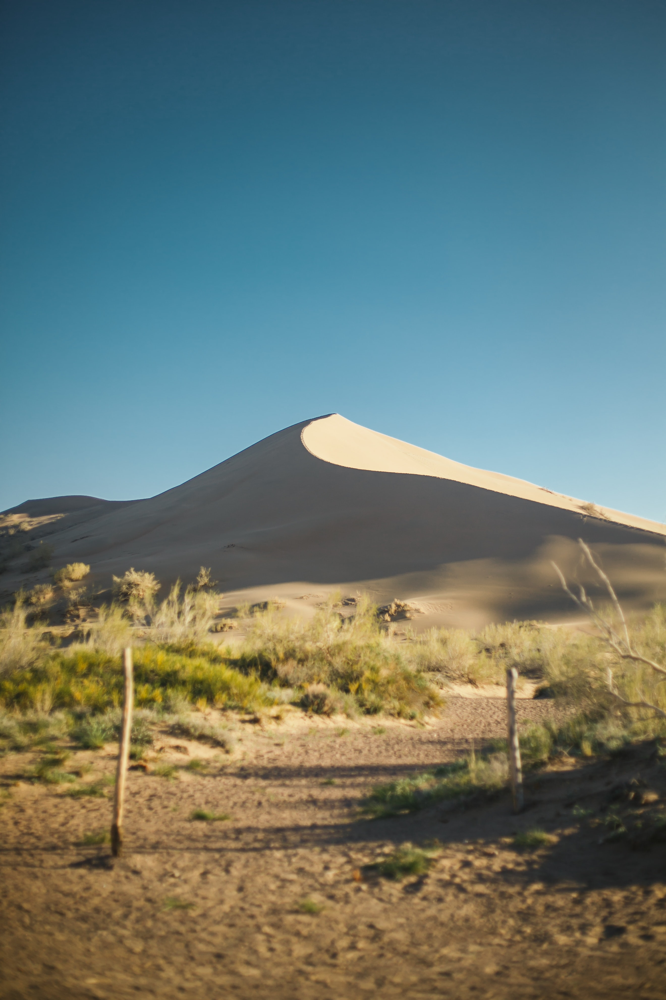
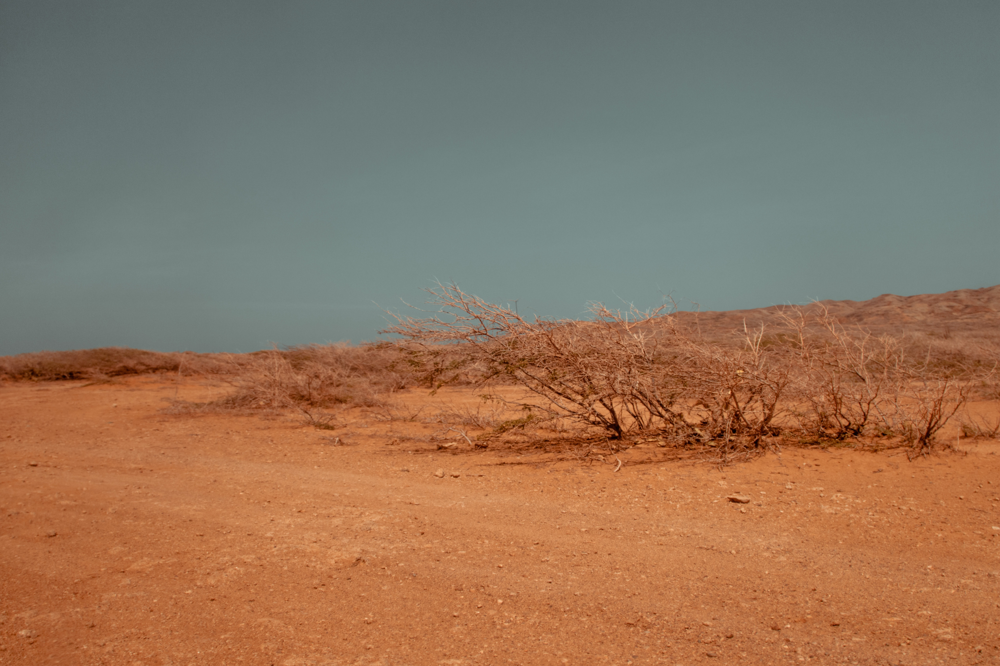

Drought is a continuous period of dry weather when an area gets less than its normal amount of rain over months or even years Crops and other plants need water to grow and animals need it to live Droughts can become dangerous to people and other land animals causing famine and even creating deserts

